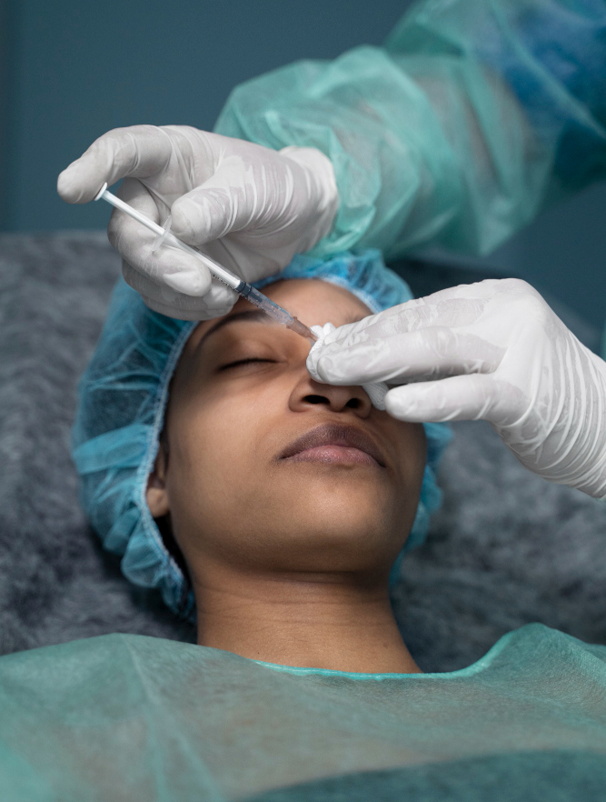

At Dr Dhannur’s Sangameshwar Hospital, Gadag, we bring advanced surgical techniques to our community so patients can receive world-class care without having to travel to distant cities. One such modern advancement is Laparoscopic Surgery, also known as Keyhole or Minimally Invasive Surgery.
What is Laparoscopic Surgery?
Laparoscopy is a technique where doctors perform surgery using very small cuts instead of large incisions. A thin tube with a camera (laparoscope) is inserted into the body, giving surgeons a clear and magnified view of the internal organs on a monitor. This allows them to perform precise procedures with minimal trauma to the body.
Benefits of Laparoscopic Surgery
Compared to traditional open surgery, laparoscopic surgery offers many advantages:
- Smaller Cuts, Less Pain: Patients experience less discomfort and scarring.
- Faster Recovery: Most patients can return to normal activities sooner.
- Lower Risk of Infection: Small incisions reduce the chances of complications.
Common Laparoscopic Procedures at Dr Dhannur’s Sangameshwar Hospital
Our team of experienced surgeons performs a wide range of laparoscopic procedures, including:
Gallbladder removal (Cholecystectomy): A common procedure to remove the gallbladder, usually due to gallstones.
Appendix removal (Appendectomy): Emergency surgery to treat appendicitis and prevent complications.
Hernia repair: Surgical correction of hernias to relieve pain and prevent strangulation.
Gynaecological surgeries: Includes procedures like hysterectomy and ovarian cyst removal for women's health.
Diagnostic laparoscopy: Performed to investigate unexplained abdominal pain and provide accurate diagnosis.
Each procedure is carried out in our advanced modular operation theatres, equipped with the latest laparoscopic instruments, high-definition imaging systems, and strict infection control protocols.
Why Choose Dr Dhannur’s Sangameshwar Hospital for Laparoscopy in Gadag?
Expert Surgeons: Skilled doctors with extensive training in minimally invasive techniques.
Modern Technology: Advanced laparoscopic equipment for safe and precise surgeries.
Patient Comfort: Focus on faster recovery, less pain, and reduced hospital stay.
Affordable Care: Quality treatment at reasonable costs, making advanced surgery accessible to the people of Gadag and nearby towns.

At Dr. Dhannur’s Sangameshwar Hospital, our goal is simple – to provide the best laparoscopic surgery in Gadag with compassion, safety, and world-class standards. Whether it is a
routine procedure or a complex case, patients can trust our expertise and facilities for reliable surgical care.